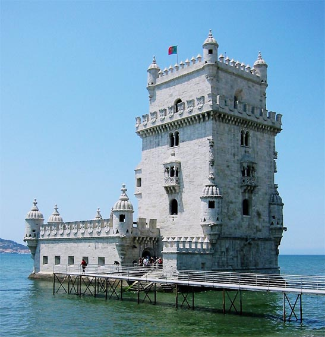
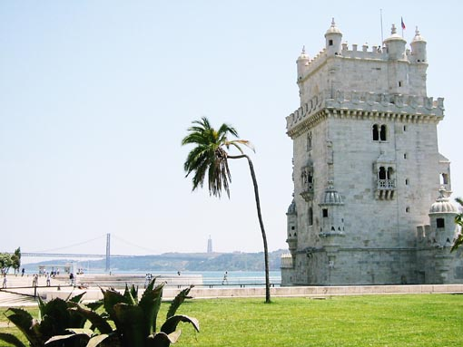
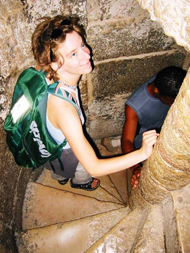
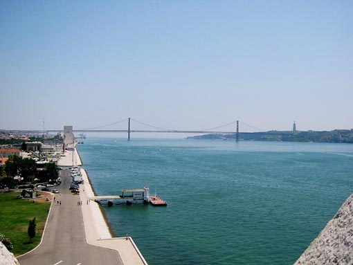

 
Torre de Belem - stolp Belem na reki Tejo, ki se pri Lizboni izliva v Atlantik. Zgrajen je bil leta 1521 po načrtu Francisca de Arruda na ukaz kralja Manuela. Romansko-gotski stil z arabskimi dodatki mu dajo eksotičen in atraktiven videz.
Spodaj pogled iz stolpa na most 25. aprila, zgrajenega leta 1966, ki je bil takrat s svojimi 2300 metri najdaljši viseči most v Evropi. Na nasprotnem bregu Lizbone je ogromen spomenik Cristo Rei, kopija spomenika Cristo Redentor iz Ria de Janeira, ki odpira roke nad Lizbono in Tejo.
